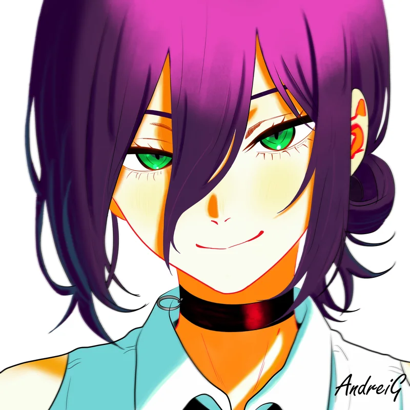
A universe,renderedframe perfect.
I’m Gean. I turn ideas into moving pictures, characters into color, and a little curiosity into something worth exploring.
SCROLL TO EXPLORE ↓
VIDEO EDITING/DIGITAL ART/MOTION DESIGN/CREATIVE EXPERIMENTS
01
About me
I’m Gean, also known as AndreiG. When something piques my interest, I like to give it my time and effort. For me, that means video editing, drawing, and passion projects that keep me curious. I enjoy figuring things out, trying something new, and making something I can call my own.
A little rhythm. A little obsession.
A lot of attention to the details.
IN MOTION
Video editing & motion graphics
ON CANVAS
IN PROGRESSDigital illustrations & detail studies
Code, curiosity & experiments ↗
02THE MOVING PICTURE
11 FILMS / 4 DIRECTIONSFind the
feeling.
A mix of movement, identity, and ideas.
Different stories. The same attention to detail.
Showing 11 videos
-
01
 Motion 01Showreel
Motion 01Showreel
-
02
 Motion 02Commercial
Motion 02Commercial
-
03
 Motion 03VFX
Motion 03VFX
-
04
 Motion 04Intro
Motion 04Intro
-
05
 Dance Edit 01Choreography
Dance Edit 01Choreography
-
06
 Dance Edit 02Freestyle
Dance Edit 02Freestyle
-
07
 Reveal 013D Animation
Reveal 013D Animation
-
08
 Reveal 02Clean Cut
Reveal 02Clean Cut
-
09
 Commentary 01Deep Dive
Commentary 01Deep Dive
-
10
 Commentary 02Analysis
Commentary 02Analysis
-
11
 Commentary 03Tutorial
Commentary 03Tutorial
That’s the collection. Your project could be next.Let’s make it happen ↗
03THE DIGITAL SKETCHBOOK
11 ORIGINAL PIECESA little more
imagination.
Characters, color, and the details in between.
A collection of my digital drawings and studies.
Showing 11 artworks

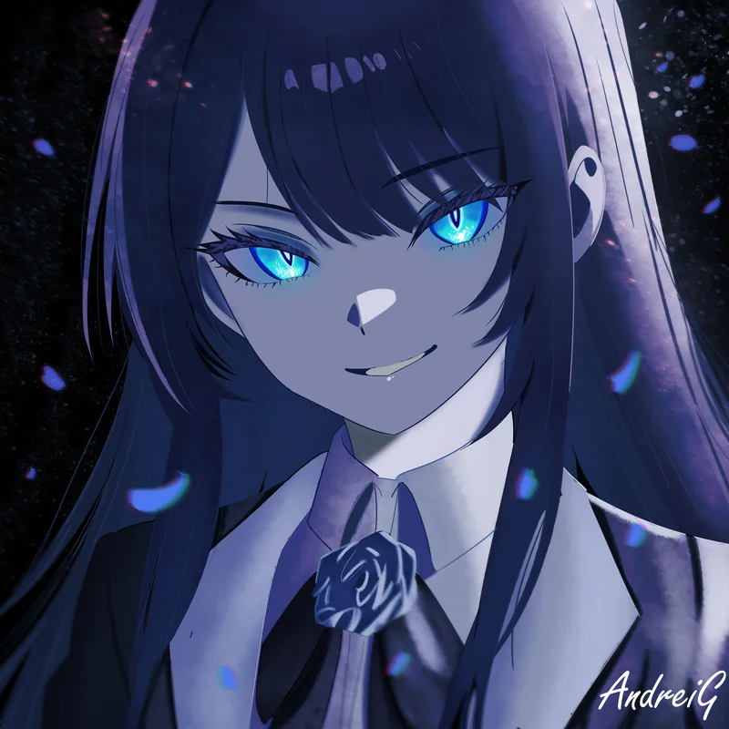
Ado
Digital illustration02
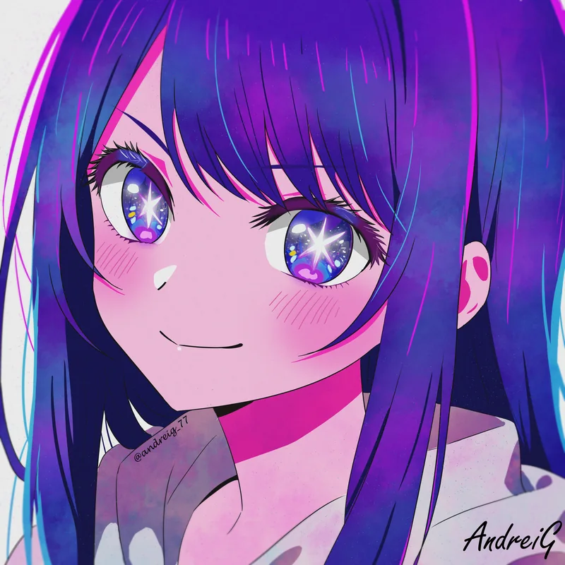
Ai Hoshino
Digital illustration03
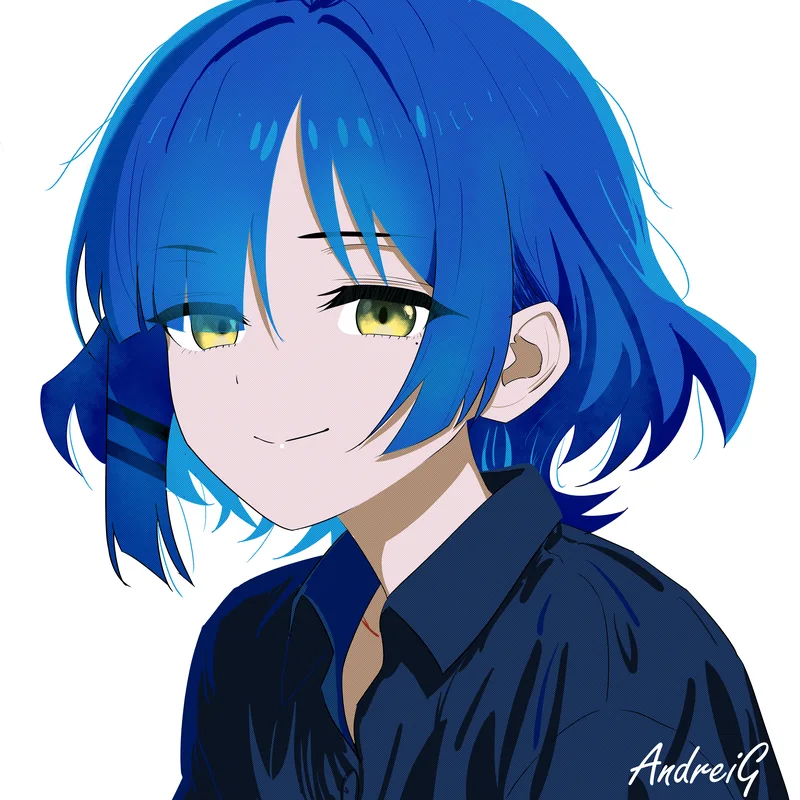
Ryo Yamada
Digital illustration04
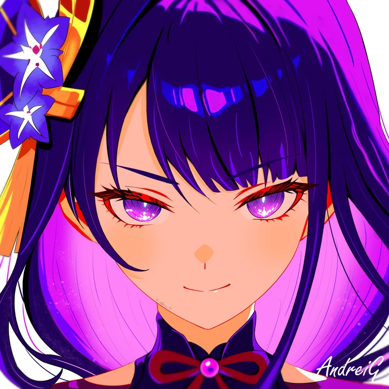
Raiden
Digital illustration05
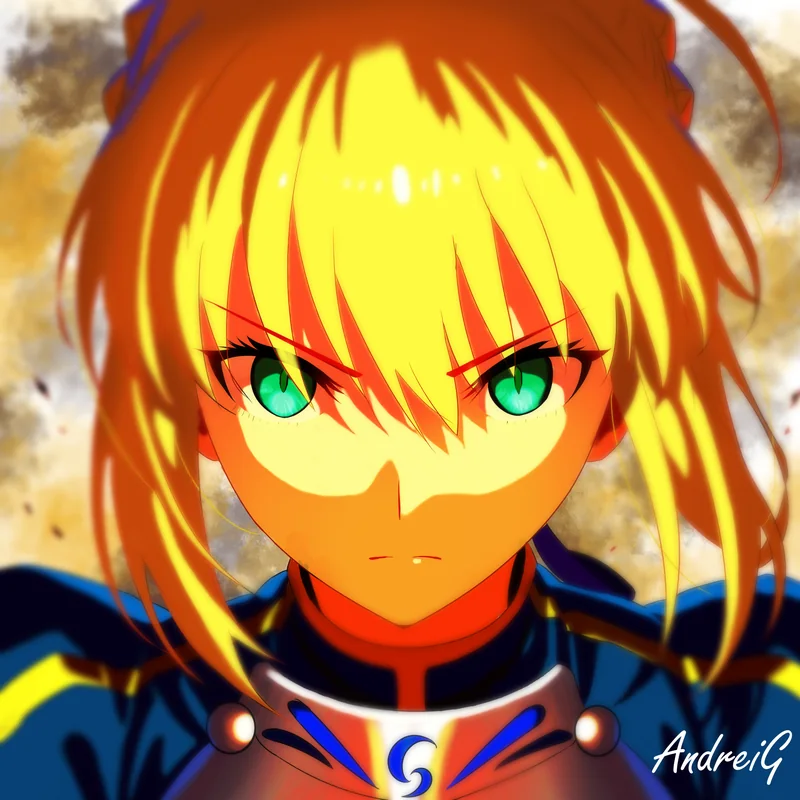
Artoria Pendragon
Digital illustration06
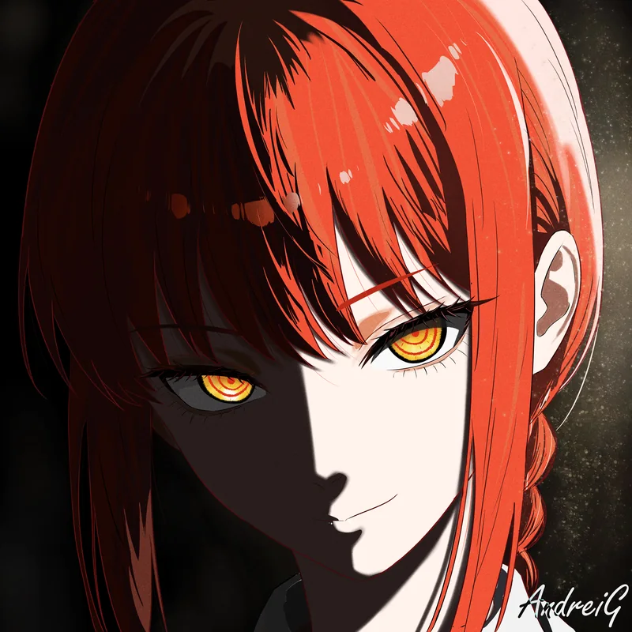
Makima
Digital illustration07
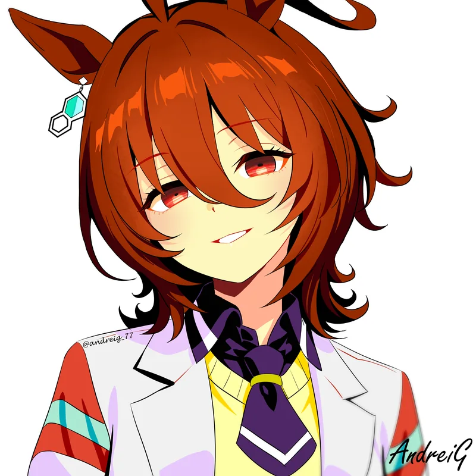
Tachyon
Digital illustration08
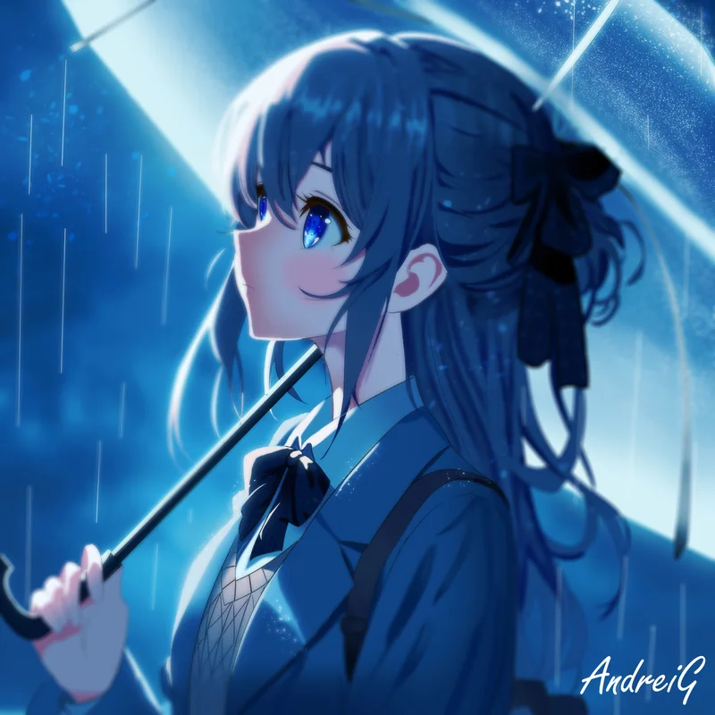
Raining After All
Digital illustration09
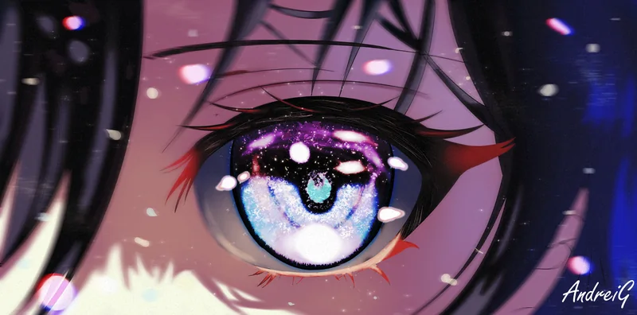
Eye Gaze
Detail study10
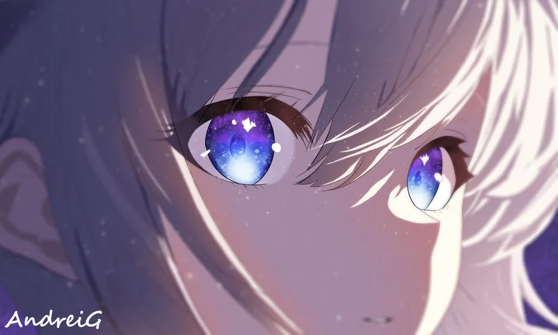
Eye Study
Detail study11I like to draw cute anime girls, yep.SELECT A PIECE TO LOOK CLOSER ↗
04
The tools & the thinking
SELECT A TOOL TO EXPLORE
IN MY CREATIVE TOOLKIT
After Effects
Motion graphics, animation, and visual effects.
01Find the story+
Start with the idea, the audience, and the feeling you want to leave behind. Every decision follows from there.
02Make it move+
Build the rhythm with intentional cuts, considered transitions, and motion that feels like part of the story.
03Obsess over the finish+
Refine the timing, balance the sound, and give the final piece a cohesive look from first impression to last detail.
BEYOND THE CANVAS
Curiosity, in code.
Explore my repositories, projects, and experiments on GitHub.
AstraStasis↗
05LET’S CONNECT
Your idea.
Our next creation.
A rough idea. A folder of footage.
Tell me what you’re thinking and let’s take it from there.
↗
+63 993 924 1678FIND ME ON VIBER